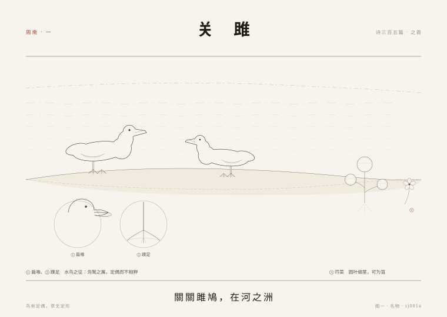
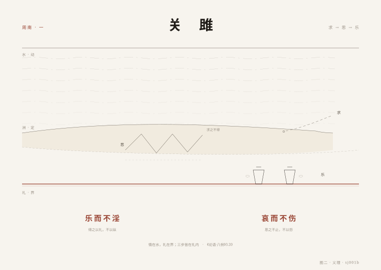

第一篇 关雎
周南 · 之一 SJ001 《诗经》首篇
一 解题
诗三判：
- 谁在说：一位求配的男子自道。不是旁人代言，不是后妃自述。诗中「寤寐求之」「辗转反侧」是第一人称的夜里，「琴瑟友之」「钟鼓乐之」是他想好了要办的事。
- 说什么事：见淑女而求为匹。求而未得则思，思到睡不着；得则琴瑟以亲之、钟鼓以乐之。三步：求—思—乐。
- 为何编在此：《诗》以风始，风以周南始，周南以关雎始。这一步不是偶然：周南是周公旦所治的南国之风，编诗者把「求配—成配」放在全书开头，等于先立夫妇之伦，再及其余。
《毛序》：「《关雎》，后妃之德也，风之始也，所以风天下而正夫妇也。」——把诗归为「后妃之德」，即以文王后妃太姒为主角，谓其「乐得淑女以配君子」，忧在进贤、不淫其色。
朱子《诗集传》：「《诗》之所谓风者，多出于里巷歌谣之作，所谓男女相与咏歌，各言其情者也。……是以《风》之始，所以著夫妇之伦。」——只取「夫妇之伦」这一层，不坐实「后妃」；并在《诗序辨说》里直指《序》「滞涩不圆」「凿空妄说」。
本库取朱子一路：诗是自道其情，不是后妃的德行档案。《序》说存为最早的解释史，不作定论。
二 经文
第一章
關關雎鳩，在河之洲。窈窕淑女，君子好逑。
第二章
參差荇菜，左右流之。窈窕淑女，寤寐求之。
第三章
求之不得，寤寐思服。悠哉悠哉，輾轉反側。
第四章
參差荇菜，左右采之。窈窕淑女，琴瑟友之。
第五章
參差荇菜，左右芼之。窈窕淑女，鐘鼓樂之。
分章：本库依朱子，分五章。毛传分三章（首章、次章、末三章为一章），郑笺、孔疏从之。五章分法便于韵读，也与「求—思—乐」三步相合；三章分法把后三章连读，见「瑟—钟鼓」一层深一层。两存，本库用五章。
三 韵读
| 一 |
洲、逑 |
幽部 |
| 二 |
流、求 |
幽部 |
| 三 |
得、服、側 |
職部（得、服、側同部） |
| 四 |
采、友 |
之部 |
| 五 |
芼、樂 |
宵部、藥部（宵藥对转） |
「樂」朱子叶音「洛」，不入效摄读法；「采」古音清母之部，「友」匣母之部，二字同部相押。「逑」与「洲」幽部叠韵，「流」「求」亦然——首二章用同一部，是全篇「求」的主调；三章转職部，短促收束，正合「求之不得」的急；四、五章转之部、宵藥，音一开一阔，「得」的语气出来了。韵不是装饰，是情绪的走法。
四 字义与名物
字义：
- 關關：和声。毛传「关关，和声也」。
- 窈窕：幽闲。朱子「窈窕，幽闲之意」。不作「美好」讲，也不作「身材纤细」讲。
- 淑：善。毛传「淑，善」。
- 好逑：逑，匹。毛传「逑，匹也」。「好逑」即佳配，非「喜好追求」。
- 寤寐：寤，醒；寐，睡。朱子「寤，觉；寐，寝也」。
- 服：思。毛传「服，思之也」。
- 悠：长。朱子「悠，长也」，谓思之长。
- 輾轉反側：朱子析为四：「辗者转之半，转者辗之周，反者辗之过，侧者转之留，皆卧不安席之意」。
- 芼：择。毛传「芼，择也」；朱子「熟而荐之也」。——两训不同，见存疑。
名物：
- 雎鸠：水鸟，一名王雎。朱子「状似凫鹥，今江淮间有之，生有定偶而不相乱，偶常并游而不相狎」。本书图一取其「定偶」之形，不执一鸟之种。
- 洲：水中可居之地。毛传「水中可居曰洲」。
- 荇菜：即莕菜，一名接余。水生，圆叶细茎，浮水而生，夏开黄花，嫩茎可食，古以荐菹（作酸菜供祭）。《周礼·天官·醢人》「加豆之实，芹菹、兔醢」，荇菹在其类。诗三言荇菜，是「祭品」不是「野菜」——这一层不看清，「左右芼之」就只是采菜。
- 琴瑟：琴五弦或七弦，瑟二十五弦，皆丝属。燕礼、乡饮酒礼用瑟；琴则士以上自御。
- 鐘鼓：钟，编钟；鼓，建鼓。二者非私家常用，是祭祀、燕享之乐。《周礼·春官》有钟师、鼓人。
五 今译
一章 水鸟关关地叫，两两立在河中的沙洲上。那位幽静美好的姑娘，是君子的好配偶。
二章 长短不齐的荇菜，左一把右一把地求取。那位幽静美好的姑娘，我醒着睡着都在求她。
三章 求不到，醒着睡着都在想。想得长啊长啊，翻来覆去，身都安不下来。
四章 长短不齐的荇菜，左一把右一把地采。那位幽静美好的姑娘，我要弹琴鼓瑟来亲近她。
五章 长短不齐的荇菜，左一把右一把地择。那位幽静美好的姑娘，我要敲钟击鼓来使她欢喜。
六 章旨
一章 以鸟起兴：鸟有定偶，人求佳配——兴在此，不在「雎鸠是什么鸟」。
二章 由「求」落到「寤寐」，求之态立。
三章 求之不得，是全篇唯一写「苦」处，也是全篇最实的一段：不写她如何，只写他如何睡不着。
四章 转「得」：琴瑟友之，是亲近，不是占有。
五章 再深一层：钟鼓乐之，是成礼，不是宴乐。
总收：一篇之内，求、思、乐三步；三步之中，情一直在，礼也一直在——礼不在情外，礼在情里，所以看不见礼的痕迹。
七 诗教
- 兴：以雎鸠之「定偶不相狎」起兴，兴起的是「求配有伦」。兴者，先言他物以引起所咏之词；此篇兴体最正：鸟之偶，人之配，一物一情，不即不离。
- 观：可观三事——求而不迫（求之以寤寐，不以强取）；思而不乱（思到辗转，仍不言怨）；得而不纵（得之以琴瑟钟鼓，不用私昵）。
- 群：可与共读者，是「发乎情，止乎礼义」六字。它教人的不是禁欲，是分寸：情可以到「辗转反侧」，礼只到「琴瑟钟鼓」，两者在同一首诗里并存。
- 怨：此篇怨最少。要说有，只一句「求之不得」——不怨人，不怨命，只写自己睡不着。这正是孔子所谓「哀而不伤」：有哀，哀不伤人，也不伤己。
八 分寸与边界
- 不可把它读成《毛序》「后妃之德」的注脚。若以「后妃求贤」为主角，则「寤寐求之」「辗转反侧」全成了替别人着急，诗里最实的那一夜就没有了。朱子已疑《序》「凿空」，本库从朱子。
- 不可把「寤寐求之」读成情欲。「求」的对象是「淑女」（德），求的状态是「思服」（想），不是「欲得」。一字之差，全篇格调两样：前者是《诗》，后者是后世艳词。
- 不可拿「窈窕」当身材标准。「窈窕」训幽闲，指性情之深静，与体态无关。今人以「窈窕」状纤瘦，是语义的滑坡，读诗时须拨回来。
- 不可把「琴瑟」「钟鼓」读成寻常娱宾之物。二器在《诗》中多用于燕飨、祭祀；此处「得配而后乐」，乐在礼中。若读成「追到了就请她听歌」，则第五章与第一章的「君子」全无着落。
- 不可因它是「风之首」就把它当教化样本，逐句索解「刺某某」。此篇的好处恰在：全篇不着一「礼」字，而礼无处不在。凡须添字解经处，宁可存疑，不可强说。
九 存疑
- 分章：朱子五章，毛传三章（末三章为一章）。五章便于韵读，三章见层深。本库用五章，三章说并存。
- 作者与年代：旧说周文王与太姒，《毛序》主「后妃之德」。朱子以为风诗多里巷歌谣，「男女相与咏歌，各言其情」，不必指实其人。本库不指实：诗中无一处可证其为王、为妃。
- 雎鸠何鸟：毛传只说「王雎」，郑笺谓「雕类」？后世有鹗（鱼鹰）说、凫鹥说、雁说。朱子取「状似凫鹥」，而「定偶」之义才是诗所取。本库不执一种，图一取形而不标学名。
- 「流」之训：毛传「流，求也」；朱子「顺水之流而取之也」。一为「求」，一为「顺流而取」，关系到「左右」是「左右求之」还是「左右取之」。两存，本库译文从毛传「求取」而兼采「顺流」之象。
- 「芼」之训：毛传「择也」，朱子「熟而荐之也」。一为采择，一为烹荐。若从朱子，则第五章由「采」进到「荐」，礼意更足；若从毛传，则只是「择」之再。本库取朱子一路为长，而并存毛训。
- 「樂」之读：朱子叶音「洛」，以就「芼」之韵；若依今音读「le」，则与「芼」不押。叶音是读诗之法，非改字，标而不改。
十 跨典
- 《论语·八佾》3.20：「子曰：『《关雎》乐而不淫，哀而不伤。』」——全篇之衡。乐而不淫，谓第五章钟鼓之乐有节；哀而不伤，谓第三章辗转之思不怨。八字可作通篇的批语。
- 《论语·阳货》17.9：「诗可以兴，可以观，可以群，可以怨。」——本库「诗教」一节的四问所出。
- 《礼记·郊特牲》：「昏礼不用乐，幽阴之义也。」——与本篇「琴瑟友之」「钟鼓乐之」正相反。一谓婚礼当静，一谓成配当乐。此张力不可抹平：或谓《诗》所写是「既得之后」的燕乐，非迎娶之礼；或谓礼有地域、时代之别。两说并存，正见经与礼不必处处合。
- 《左传·襄公二十九年》：季札观周南、召南，曰「美哉！始基之矣，犹未也，然勤而不怨矣。」——「勤而不怨」四字，与「哀而不伤」可互证。
- 《孟子·万章上》：「《诗》云：『娶妻如之何？必告父母。』」——孟子引诗论娶妻之礼，正可与本篇「求配」对读：诗写情之起，孟说礼之守，一情一礼，合看才全。
十一 双卡与图
双卡五对：
| 寤寐求之（求） |
琴瑟友之（得） |
| 輾轉反側（苦） |
鐘鼓樂之（乐） |
| 雎鸠定偶（有定） |
荇菜参差（无定） |
| 窈窕（德） |
好逑（配） |
| 乐而不淫 |
哀而不伤 |

图一 · 雎鸠与荇菜 名物图

图二 · 求思乐 义理图
读图三处：
- 全形与特写：全形只给「并立」之姿——两鸟相对而不相触，站在洲上，不在水中，「在河之洲」四字落实；可指认的部分交给两个特写圆：①
扁喙、② 三趾有蹼。水鸟之征在喙与足，不在羽色。
- 荇菜的叶与茎：圆叶、细茎、根须垂水，一花五瓣——「参差」之形；三章「流、采、芼」三个动作都落在这一丛上。
- 下段的一行：不作装饰，是给全篇定秤的一句：「鸟有定偶，草无定形。」
图二（求—思—乐）：三格横排，求居中为红格——「求不得」是全篇的转折，也是唯一写苦处。箭头的方向不可反读：不是求到思、思到乐，是一路被礼接着走。下栏两把尺，乐而不淫、哀而不伤，是孔子的定评，图中不作装饰，只管定秤。
图说一句：鸟有定偶，草无定形：一章之内，一取定，一取择。